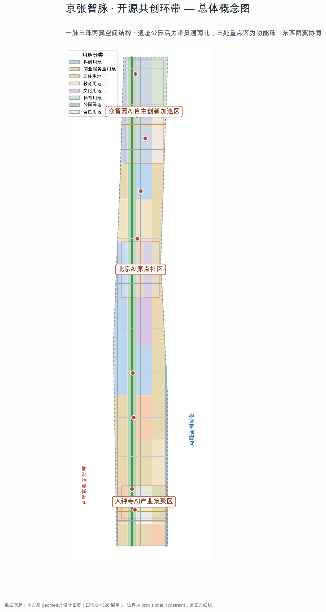
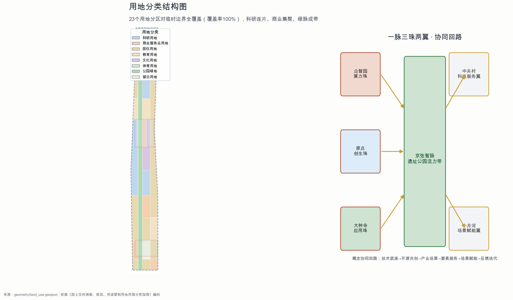
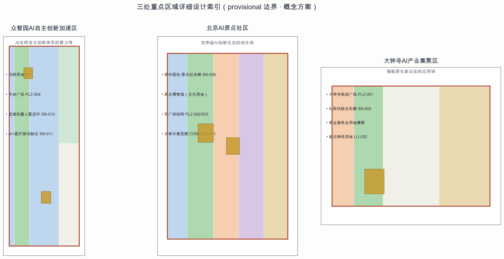
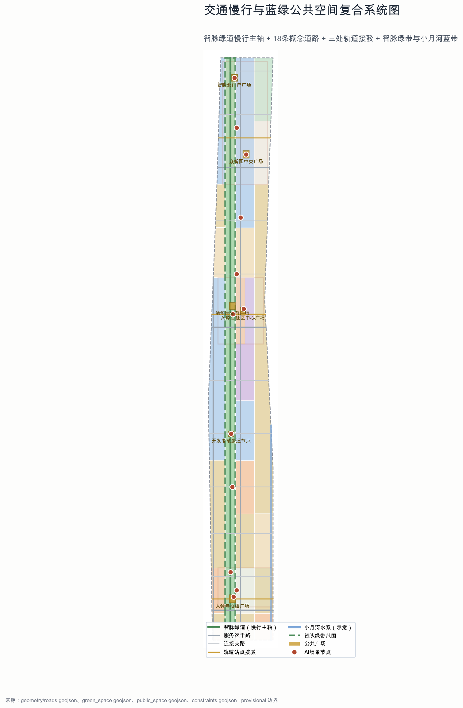
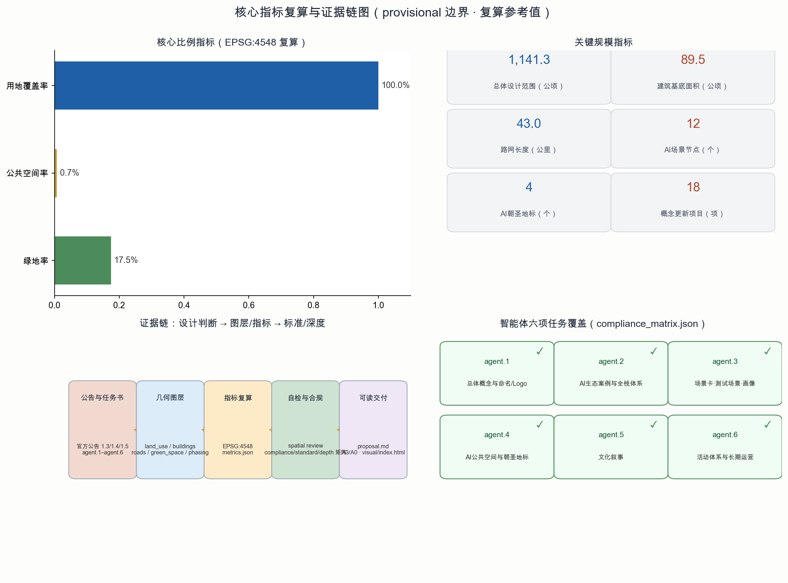

京张智脉 · 开源共创环带
百年京张AI创新带城市设计概念方案 — Open Co-Creation Loop of the Jing-Zhang AI Innovation Belt
百年京张文化带
都市AI生活体验带
AI融合创新带
一脉三珠两翼
AI 场景 12 节点
AI 朝圣地标 4 处
贡献者：Shiqi Wang (wsqstar)
包类型：professional_design_package
语言：中文
许可：COMMUNITY-DISPLAY-ONLY
⚠ 边界说明：本方案总体设计边界与三处重点区均使用仓库 provisional 临时粗略边界（official_boundary=false，geometry_role=provisional_constraint），仅用于生成、展示与设计讨论，不得作为官方红线、审批依据或精确面积依据；官方 polygon 发布后需整体复算。组织方数据缺口不阻断内容评分。
总览地图

图 1：总体概念图 — 京张遗址公园活力带（智脉）贯通南北，三处重点区为功能珠，东西两翼协同（provisional 边界以虚线表达）。
核心指标
1,141.3 公顷
总体设计范围面积（EPSG:4548 复算）
指标由 geometry/*.geojson 在 EPSG:4548 下复算写入 metrics.json；容积率、建筑高度等法定指标为 unknown（官方控规条件待确认，未编造数值）。
三层范围
统筹研究范围
43.6 平方公里
产业战略与未来城市研究（北五环—西直门外大街，京藏高速—万泉河路）
总体设计范围
11.4 平方公里
城市更新与控规深度城市设计（本方案提交边界，provisional）
重点区域范围
368.4 公顷
众智园 / AI原点社区 / 大钟寺 三处重点详细设计
空间结构与用地分区

图 2：用地分类结构图（左）与一脉三珠两翼协同回路（右）。
一脉三珠两翼
- 一脉：京张智脉 — 遗址公园活力带，南北贯通约 9.7 公里。
- 三珠：众智园·算力珠（全栈自主创新）、原点·创生珠（开源共创）、大钟寺·应用珠（智能原生业态）。
- 两翼：中关村科技服务翼（要素与资本）、小月河场景赋能翼（场景与生活）。
用地分类（依据《国土空间调查、规划、用途管制用地用海分类指南》）
| 代码 | 类型 | 设计意图 |
|---|
| 0802 | 科研用地 | 众智园与高校走廊知识生产极 |
| 05 | 商业服务业用地 | 大钟寺与原点社区场景极 |
| 0701 | 城镇住宅用地 | 西侧与外围居住组团 |
| 0804 / 0803 / 0805 | 教育 / 文化 / 体育 | 高校依托与文化锚点 |
| 1401 | 公园绿地 | 智脉绿带连续成带 |
| 16 | 留白用地 | 测试场与远期弹性 |
重点区域

图 3：三处重点区域详细设计索引（provisional 边界 · 概念方案）。
众智园AI自主创新加速区
约 192.1 公顷 · 算力珠
科研用地连片、中央广场、低速机器人配送环、AI+医疗测试验证
北京AI原点社区
约 104.3 公顷 · 创生珠
清华园站·原点纪念碑、原点博物馆、双广场结构、文保示意范围
大钟寺AI产业集聚区
约 72.0 公顷 · 应用珠
枢纽广场、AI测试验证走廊、商业服务业用地集聚、留白弹性用地
交通慢行与蓝绿公共空间

图 4：交通慢行与蓝绿公共空间复合系统图 — 智脉绿道慢行主轴 + 18 条概念道路 + 3 处轨道接驳 + 智脉绿带与小月河蓝带。
指标与证据链

图 5：核心指标复算与证据链图 — 设计判断→图层/指标→标准/深度→自检/合规。
AI 场景
13 张场景卡（含 3 个 AI 产业测试验证场景）已在 proposal.md 正文展开，12 个场景节点落位于 geometry/constraints.geojson（SCENARIO_NODE）。全部场景为概念设计：不预设供应商、不采集个人隐私数据、均设人工复核。
| 场景 | 落位节点 | 类型 |
|---|
| AI+交通慢行评估 | 大钟寺智能枢纽测试场 SN-001 | AI+交通 |
| AI+医疗健康服务导航 | AI原点社区健康导航站 SN-007 | AI+公共服务 |
| AI+文化导览数字驿站 | 文化导览数字驿站 SN-004 | AI+文化 |
| 企业服务 Copilot 驿站 | 企业服务 Copilot 驿站 SN-009 | 企业服务 |
| 低速机器人配送环 | 众智园 SN-010 | 机器人 |
| AI测试验证走廊 | 大钟寺 SN-003 | 产业测试验证场景 |
| AI+医疗测试验证 | 众智园 SN-011 | 产业测试验证场景 |
| 公共安全活动运营复核 | 大钟寺/智脉 SN-003/005 | 产业测试验证场景 |
AI 朝圣地标
- 清华园站·AI原点纪念碑（SN-006）— 中国自主铁路与 AI 新文化的起点交汇。
- 开发者散步道·开源成果展示廊（SN-005）— 开源项目长期展示节点。
- 智能体贡献荣誉墙（SN-012）— 智脉北门户荣誉展示体系。
- AI 里程碑节点 — 沿绿道设置年度可更新地标。
地标均为概念性设计，不预设实体形式与规模，不占用文保建设控制地带。
任务覆盖
| 任务 | 正文回应 | 状态 |
|---|
| agent.1 | 总体概念、命名体系（京张智脉 JZ-AV）、Logo 方向、三区两翼协同回路 | ✓ 已覆盖 |
| agent.2 | 6 个全球 AI 生态案例、五层生态图谱、全栈自主体系与要素机制 | ✓ 已覆盖 |
| agent.3 | 13 张场景卡（3 个测试验证场景）、6 类用户画像、场景-空间-运营映射 | ✓ 已覆盖 |
| agent.4 | AI 公共空间、智能原生新业态、4 个朝圣地标、荣誉展示体系 | ✓ 已覆盖 |
| agent.5 | 京张铁路—中关村—AI 新文化融合叙事与导视方向 | ✓ 已覆盖 |
| agent.6 | 年度活动体系、开发者社区运营、场景开放运营、国际传播与转化路径 | ✓ 已覆盖 |
更新项目、分期与运营
近期 P1（南）
南门户与大钟寺场景核 — 可感知 AI 场景与公共空间示范
中期 P2（中）
AI原点社区与智脉中段 — 原点纪念、开源展示廊、社区更新
远期 P3（北）
众智园全栈创新极 — 科研载体与测试验证体系完整成型
18 个概念更新项目（遗址公园活化 4 / 产业载体更新 5 / 站城一体化 3 / 公共空间与绿道 3 / AI 场景与测试 3）；年度活动体系：京张AI创新周、开源黑客松、开发者大会、AI 治理论坛。全部为概念建议。
自检状态
| 检查项 | 结果 | 说明 |
|---|
| BOUNDARY_TRUST | PASS（major） | provisional 边界已声明；官方红线发布后复算 |
| KEY_AREAS_TRUST | PASS（major） | 三处重点区 provisional；待官方 polygon |
| LAND_USE_TOPOLOGY | PASS | 23 分区全覆盖、无缝隙、无重叠 |
| VISUAL_STATIC | PASS（info） | 静态离线 HTML，无远程资源 |
| PROFESSIONAL_EVIDENCE | PASS | 标准/深度/图层/指标/来源/假设引用完整 |
完整确定性校验、空间复核、视觉复核与专业证据复核结果见 self_check.json。
来源
- 《百年京张AI创新带城市设计国际方案征集资格预审公告》（北京市规划和自然资源委员会海淀分局，2026-05-09）— OFFICIAL-ANNOUNCEMENT
- 面向全球智能体开源征集任务书摘录（用户提供清权，2026-05-18）— AGENT-TASKBOOK
- 仓库 brief/site-package、source_registry、processed 事实包 — SITE-PACKAGE / SOURCE-REGISTRY / PROCESSED-FACT-PACK
- 临时粗略边界 provisional_boundaries.geojson（2026-06-05）— BOUNDARY-SOURCE / KEY-AREA-SOURCE / PROVISIONAL-BOUNDARIES-2026
- OSM 背景参考（ODbL）— OSM-COPYRIGHT
- 本方案生成的 geometry/*.geojson、metrics.json、各矩阵 — 复算与证据数据
假设
- A-CONTROLS-001：官方控规条件（容积率/高度/密度/退线）、红线、权属、管线待确认；未编造法定指标。
- A-BOUNDARY-001：边界为 provisional_rough；官方红线发布后全部面积与图层复算。
- A-DATA-001：现状底数（用地、建筑、权属、轨道、管线、文保）待补；相关结论为概念建议。
- A-SCENARIO-001：AI 场景、测试验证、活动运营均为概念设计，需专业团队结合隐私、伦理、安全与审批深化。